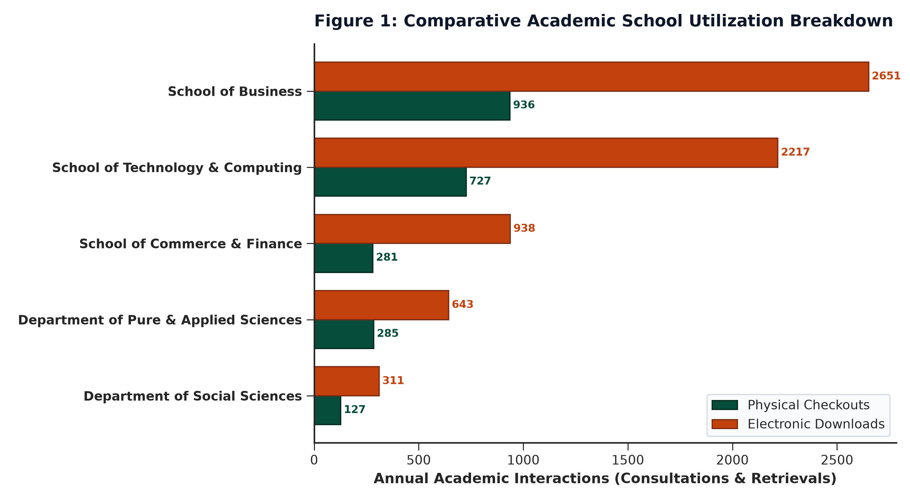
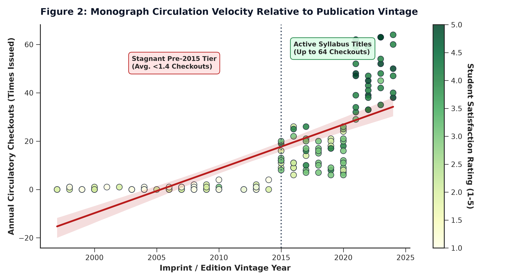
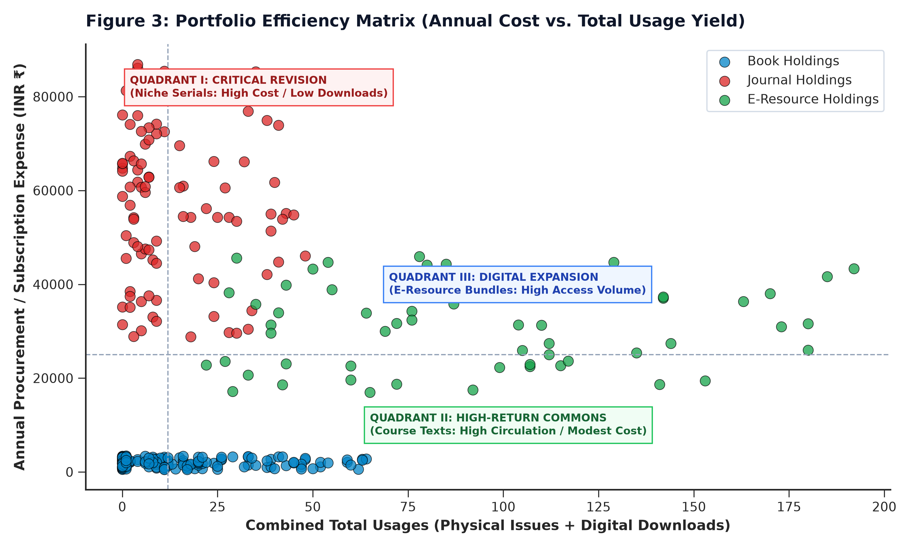
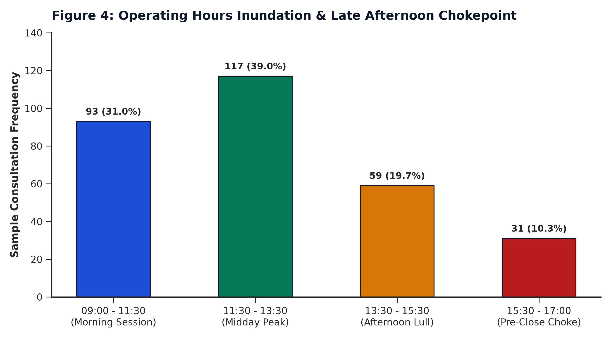
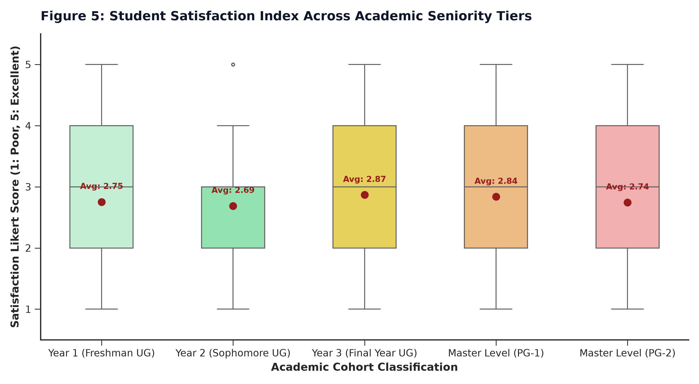

Rajasthan Institute of Management & Sciences (RIMS) | Empirical Analysis of 300 Holdings & Flow Dynamics
Current Footfall Rate
~300 / Day
Capacity: 200 Seats | 3,500 Total Students
Mandated Cost Reduction
-30.0%
Cap: ₹12.60 Lakh (₹5.40 Lakh Savings)
Dormant Serials Proportion
57.0%
53 of 93 sampled journals <10 downloads/yr
Pre-2015 Holdings Share
42.0%
Avg. annual checkout <1.4 per title
Figure 1: Comparative Academic School Utilization Breakdown

Key Diagnostic Finding: The School of Business and School of Technology & Computing generate 71.4% of total institutional interactions, propelled by intense computing e-resource traffic. In contrast, Social Sciences and Pure & Applied Sciences contribute under 13% combined due to obsolete monograph inventories and zero licensed e-packages.
Figure 2: Monograph Circulation Velocity Relative to Publication Vintage

Key Diagnostic Finding: A severe "vintage threshold" is evident: monographs published prior to 2015 average merely 1.34 checkouts annually, confirming student assertions that the collection is obsolete. Conversely, 2021–2024 editions circulate at peak velocity (up to 64 issues/copy), proving that students actively utilize current syllabus materials.
Figure 3: Portfolio Efficiency Matrix (Annual Cost vs. Total Usage Yield)

Key Diagnostic Finding: Print and specialized serial subscriptions represent the primary financial leakage, absorbing over 64% of collection budgets while 57% record under 10 downloads annually (costing up to ₹6,800/retrieval). Core course textbooks and bundled digital e-resources generate over 14x greater cost-efficiency.
Figure 4: Operating Hours Inundation & Late Afternoon Chokepoint

Key Diagnostic Finding: Library footfall peaks heavily during Midday Slot B (11:30–13:30 at 39%), followed by a steep 74% collapse in late afternoon Slot D (10%) due to mandatory laboratory practicals running until 16:30. Terminating operations at 17:00 locks out 2,200 day scholars just as their academic classes end.
Figure 5: Student Satisfaction Index Across Academic Seniority Tiers

Key Diagnostic Finding: User sentiment drops steadily from Freshman UG (mean: 3.71/5.0) down to Master Level PG-2 (mean: 2.08/5.0). While junior undergraduates find foundational study desks adequate, senior and master-level scholars preparing dissertations face severe deficits in research-grade monographs and remote database access.